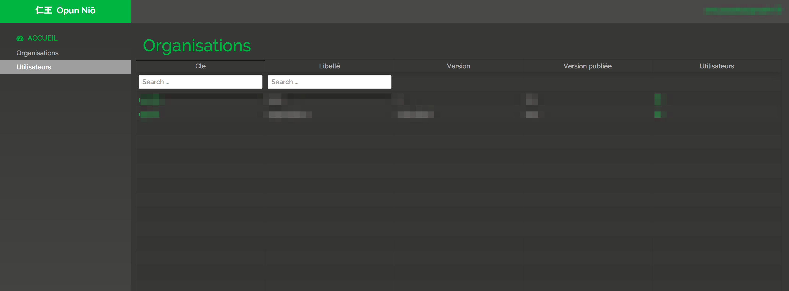
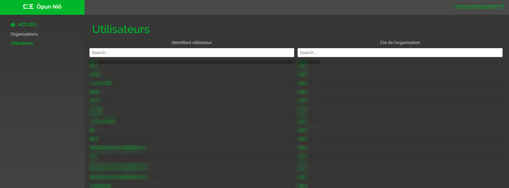
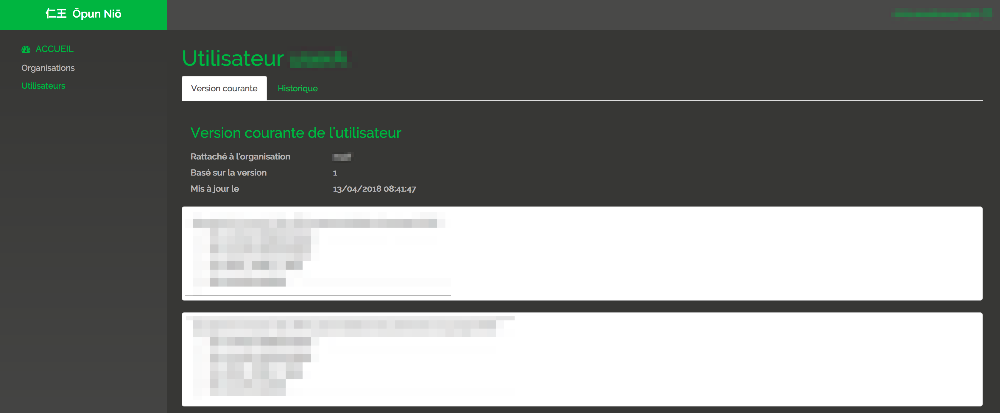

Back Office
Each tenant comes with its own data, it also comes with its own back office.
Acess
Backoffice is accessible through the following url :
https://
/ /bo
Organisations View
Organisation view provides the list of organisations in the given tenant.

Users View
Users view provides the list of users in the given tenant.

Consents View
Organisation view provides the list of users in the given tenant.
